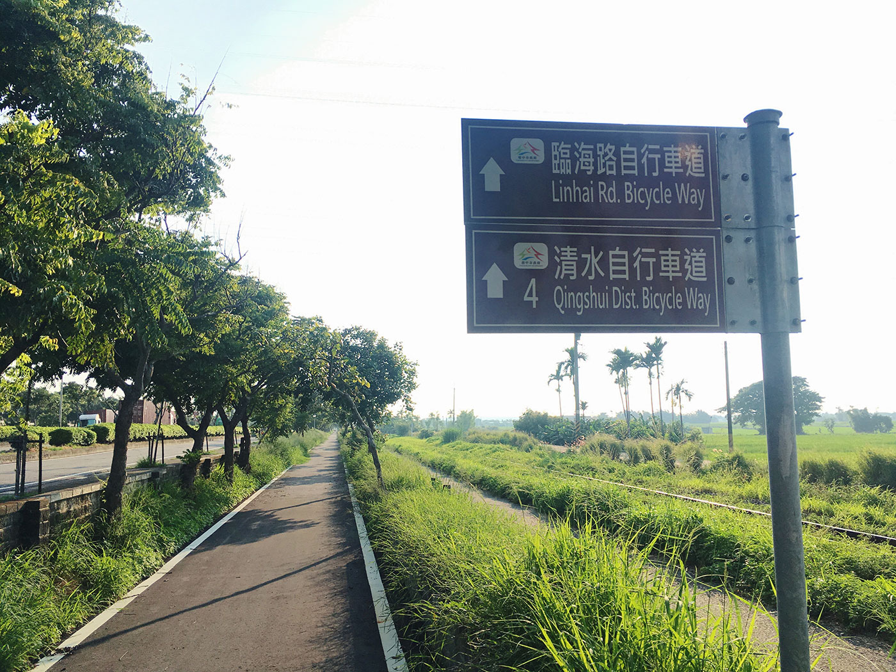

火車環島 Day4
光彩奪目的高美霞光。
這天天氣很好，所以決定繼續跑海線，因為海線車較少，為了節省時間，還是採用來回乘坐的方式，最後一站到清水，借了 ubike 騎至高美溼地看夕陽，很幸運看見美麗的霞光。
這日總共走了台中、成功、追分、沙鹿、苑里、清水等六站，騎腳踏車時路過了不靠港的台中港車站。

第一站：台中火車站。
來過台中很多次，覺得台中車站真的蓋的很大氣，舊站保留下來也很好，不過人真的不是普通的多。
第二站：成功火車站。
在成功下車轉坐成追線，成功車站月台目前大整修，成追線還要等 1 小時，還好旁邊有間萊爾富可以喝咖啡發呆，成功車站沒有販賣追分成功的硬式車票，追分車站才有。
第三站：追分火車站。
台鐵海線五寶之一，五寶基本上長的很像，都是日式木造車站的樣貌，這裡可以買到追分成功的硬式紀念票。海線的班次真的很少，下一班約四十分後才會到。
第四站：沙鹿火車站。
到這裡肚子也餓了，就臨時決定到車站前的市場晃晃吃東西，一個人旅行就是可以如此任性，只不過到的時候，早市已經開始收了，想吃個肉圓都買不到 QQ 。
第五站：苑里火車站。
總算在這裡吃到了肉圓，離火車站不遠的茂焱肉圓，用的是北部較少見的白醬，甜甜的好好吃。
第六站：清水火車站。
清水車站附近有公車直達高美溼地，因為當天下午三點多日頭依舊很烈，原本我想直接坐公車過去，此時一位十來歲的美眉騎著自行車從我面前經過，望著那瀟灑擺動的馬尾，不知不覺我就騎上 ubike 惹……。
路過：台中港火車站。
騎自行車道至高美溼地時，路過不靠港的台中港車站，順手拍了一張。
激推：五福圳自行車道 & 高美溼地。
從清水站騎五福圳自行車道接臨海路自行車道至高美溼地，大約 10 公里，沿途沒有密集的樹蔭遮蔽，所以陰天騎會比較舒適一些，不過風景不錯且路面平坦，除了太熱外倒不覺得累。


到達高美溼地後，選了一個拍攝點就把手機架著準備錄影，等待時跟旁邊架單眼相機的先生聊了起來，他說他經常來拍，覺得今天的天氣很有機會出現霞光，叫我不用急著回去，可以待到六點半左右。原本我是打算六點天黑前就離開的，聽他這麼一說就多待了一會，多虧這位先生的建言，我才有幸看見如此美麗的景色。
延伸閱讀：推薦台中住宿 旅巷自在輕旅